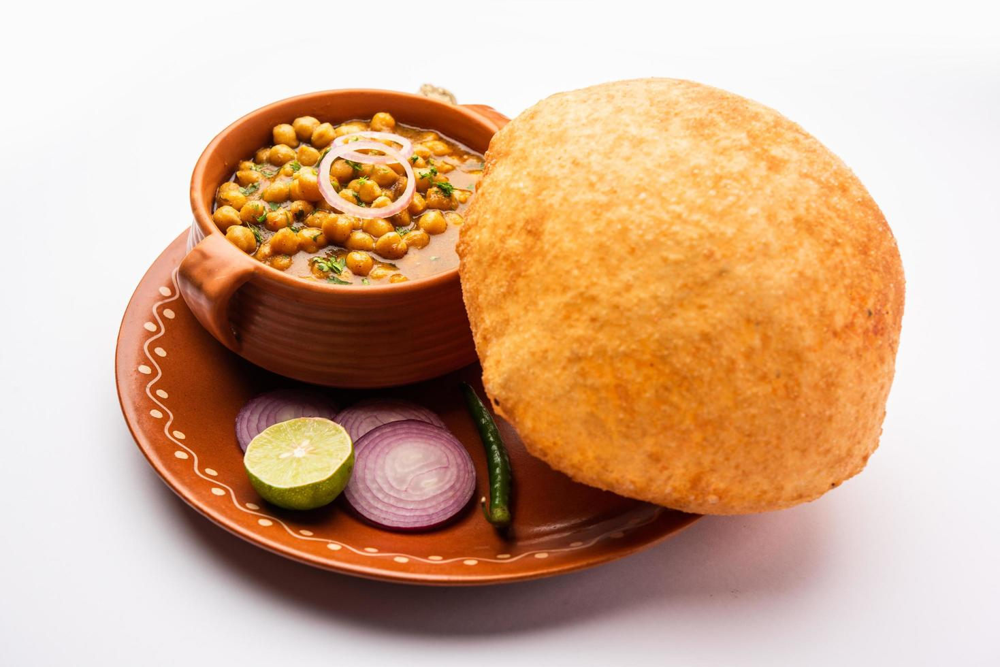
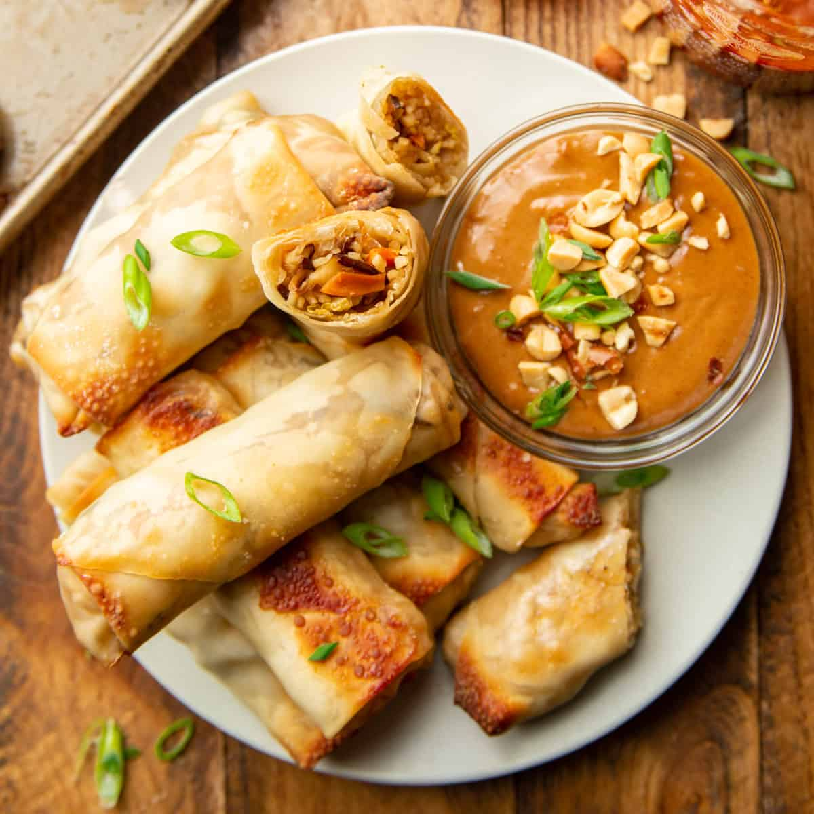
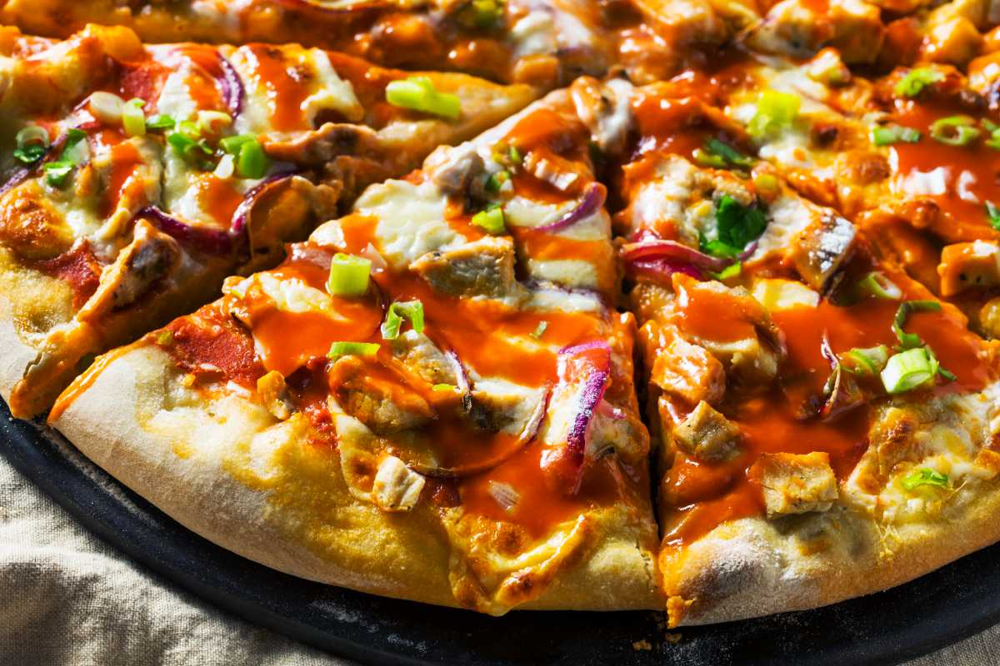
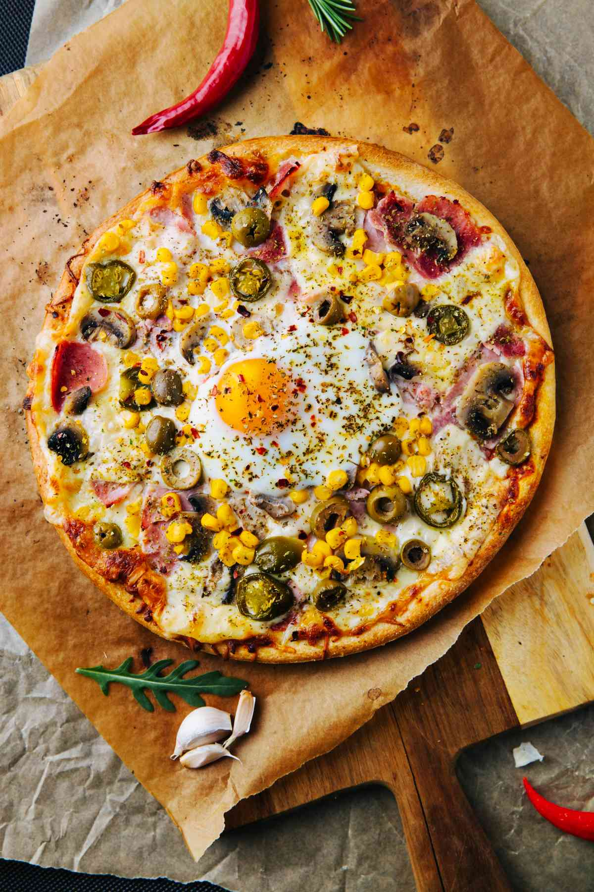

Recipe Heaven
variety of foods
popular foods

Fish

Cake

Lobster
gallery

Pancakes
Pancakes are a popular breakfast dish made from a simple batter of flour, eggs, milk, and baking powder. Cooked on a hot griddle or pan, they're often served with syrup, butter, fruits, or toppings like whipped cream or nuts.

Cupcakes
Cupcakes are small, individual cakes made from a batter of flour, sugar, butter, eggs, and baking powder. Baked in muffin tins, they are often topped with frosting, sprinkles, or other decorations, making them a popular treat for parties and celebrations.

Hummus
Hummus is a creamy Middle Eastern dip made from blended chickpeas, tahini, olive oil, lemon juice, and garlic. It's commonly served with pita bread or vegetables and is enjoyed as a healthy snack or appetizer in many cuisines worldwide.

Salmon
Salmon is a flavorful, nutrient-rich fish known for its pink flesh and high omega-3 content. It's often grilled, baked, or pan-seared and can be served with a variety of sides. Popular in many cuisines, it's both healthy and versatile.
sandwich
A sub-style sandwich made with sliced meats like ham or turkey, cheese, fresh lettuce, tomatoes, and other veggies, all served in a seeded baguette. Popular for its customizability, it offers a delicious balance of flavors in every bite.

Samosa
A samosa is a popular Indian snack consisting of a crispy, fried pastry filled with spiced potatoes, peas, and sometimes meat. It's often served with chutneys, like mint or tamarind, and is enjoyed as a savory treat during tea time or as street food.

Lobster
Lobsters are a luxurious seafood dish, often grilled or broiled to perfection. The tender meat is typically brushed with butter, garlic, and herbs, giving it a rich, savory flavor. They are commonly served with lemon wedges for a fresh citrus finish.
Aloo Parantha
Aloo parantha is a traditional Indian flatbread stuffed with a spicy mashed potato filling. Cooked on a hot griddle with ghee or oil, it's typically served with yogurt, pickle, or butter. This hearty dish is a popular breakfast choice in North India.
Panner Butter Masala
Paneer Butter Masala is a creamy, rich North Indian dish made with paneer (Indian cottage cheese) cooked in a tomato-based, buttery gravy. Flavored with spices and garnished with cream, it's often served with naan or rice, making it a popular vegetarian delight.
Veg Kabeb
Veg kebabs are a delicious vegetarian alternative to traditional kebabs, made from a mix of vegetables, potatoes, and sometimes paneer or lentils. These ingredients are spiced, shaped onto skewers, and grilled or pan-fried, offering a flavorful, smoky taste.
Panner Tikka
Paneer Tikka is a popular Indian appetizer made from marinated cubes of paneer (Indian cottage cheese) grilled or baked to perfection. Seasoned with yogurt and spices, it’s often skewered with vegetables like onions and bell peppers and served with green chutney for added flavor.
Chole Bhature
Chole Bhature is a classic North Indian dish consisting of spicy chickpea curry (chole) served with deep-fried, fluffy bread (bhature). making it a popular meal for breakfast or lunch.

Golgappa
Golgappa, also known as pani puri, is a popular Indian street food snack made of crispy, hollow puris filled with spicy and tangy flavored water, potatoes, chickpeas, and tamarind chutney. This refreshing, flavorful bite-sized treat is loved for its burst of taste and texture.
Spring Rolls
Veg spring rolls are a popular appetizer made from thin pastry sheets filled with a mix of stir-fried vegetables like cabbage, carrots, and bell peppers. Rolled and deep-fried until crispy, they’re often served with sweet chili or soy sauce, offering a tasty, crunchy snack.
Cutlet
Cutlet is a popular snack made from mashed vegetables or meat mixed with spices, coated in breadcrumbs, and shallow or deep-fried to a crispy golden brown. Often served with ketchup or chutney, it’s a tasty, flavorful treat enjoyed as an appetizer or tea-time snack.

Kulfi
Kulfi is a traditional Indian frozen dessert made from thickened milk, flavored with cardamom, saffron, and nuts. Creamy and dense, it's similar to ice cream but richer, offering a deliciously sweet and aromatic treat enjoyed in various flavors.

Rolled Ice Cream
Rolled ice cream is a Thai-inspired dessert made by pouring a creamy base onto a cold metal surface, mixing in flavors and toppings, then rolling it into thin curls. It's a fun, customizable treat with endless flavor possibilities.
Snow Cream
Snow cream is a simple, refreshing dessert made by mixing fresh snow with milk, sugar, and vanilla extract. Light and fluffy, it has a unique texture and a mildly sweet taste, perfect for enjoying during winter snowfall.
Mochi
Mochi is a chewy, sweet Japanese treat made from glutinous rice flour, often filled with red bean paste, ice cream, or fruit. Its soft, sticky texture and delicate sweetness make it a unique, enjoyable dessert in various flavors.
Frozen Yogurt
Frozen yogurt is a tangy, creamy dessert made from yogurt, often mixed with fruit or flavorings, then frozen to a smooth texture. It's a refreshing, lower-fat alternative to ice cream, offering a delicious balance of sweetness and tartness.
Lemonade
Lemonade is a refreshing drink made from fresh lemon juice, water, and sugar, often served chilled with ice. This sweet and tangy beverage is a popular choice in warm weather and can be garnished with mint leaves or lemon slices for extra flavor.
Mango shake
Mango shake is a refreshing, creamy beverage made with ripe mangoes, milk, and sugar, perfect for summer. Simply blend chilled mangoes and milk until smooth, add sugar or honey to taste, and garnish with ice or nuts.
Masala Tea
Masala tea is a spiced Indian tea made by brewing black tea with a mix of spices like ginger, cardamom, and cinnamon. This warm, aromatic drink is perfect for relaxation and boosts energy with its unique, flavorful blend.
Banana Shake
Banana shake is a creamy, nutritious drink made by blending ripe bananas with milk and a touch of honey or sugar. This filling beverage is perfect for breakfast or as a quick snack, offering natural sweetness and energy.

Bismark pizza
Bismarck pizza is topped with mozzarella, tomato sauce, and a sunny-side-up egg at the center, often accompanied by ham or prosciutto. The baked egg adds richness to each slice, creating a deliciously savory and unique pizza experience.
Buffalo Pizza
Buffalo pizza combines a crispy crust with tangy Buffalo sauce, mozzarella, and chunks of spicy chicken. Often topped with ranch or blue cheese dressing, it delivers a bold, spicy flavor with a creamy finish that’s truly satisfying.

California Pizza
California pizza features a thin, crispy crust with inventive toppings like avocado, goat cheese, and sun-dried tomatoes. Known for its fresh, unconventional ingredients, it reflects California's culinary diversity and emphasis on fresh, seasonal produce.
Caprese Pizza
Caprese pizza is a fresh, light pizza topped with mozzarella, sliced tomatoes, and basil leaves, inspired by the Italian Caprese salad. Drizzled with olive oil and sometimes balsamic glaze, it’s a perfect blend of vibrant flavors and simplicity.
Carbonara pizza
Carbonara pizza combines creamy sauce, mozzarella, pancetta or bacon, and a hint of black pepper, inspired by the classic pasta dish. Topped with eggs that cook slightly in the oven, it creates a rich, savory flavor with a crispy crust.

Cuban Style pizza
Cuban-style pizza features a soft, doughy crust with a slightly thicker base, topped with mozzarella and gouda cheese for a unique blend. Often garnished with toppings like ham or chorizo, it's baked until the cheese bubbles.

Greek-style pizza
Greek-style pizza is known for its thick, chewy crust and is typically baked in a pan with a generous olive oil coating. Topped with ingredients like feta cheese, olives, tomatoes, and oregano, it offers a rich, Mediterranean flavor profile.
Margherita pizza
Margherita pizza is a classic Italian pizza topped with fresh tomatoes, mozzarella cheese, and basil, representing the colors of the Italian flag. With a simple yet delicious flavor, it highlights the freshness of each ingredient on a thin, crisp crust.
Meat Pizza
Meat Pizza is a hearty feast, a dream come true for meat enthusiasts. Packed with pepperoni, sausage, ham, bacon, and sometimes even more, this pizza is a robust and filling option.

Hamburger
A hamburger is a popular sandwich consisting of a cooked ground beef patty, placed inside a sliced bun. It's often topped with ingredients like lettuce, tomato, cheese, pickles, onions, and condiments like ketchup or mustard, making it a classic fast food item.
Aussie burger
The Aussie Burger is a hearty classic topped with a beef patty, cheese, lettuce, tomato, beetroot, fried egg, and sometimes pineapple. This burger’s unique flavors make it a favorite across Australia for a flavorful, satisfying meal.
Bánh Mì burger
The Bánh Mì Burger combines Vietnamese flavors with a juicy patty, topped with pickled carrots, daikon, fresh cilantro, and spicy mayo on a crusty baguette. It’s a fusion of traditional Bánh Mì and a classic burger.
Beyond burger
The Beyond Burger is a plant-based patty made to look, cook, and taste like beef. Packed with protein, it’s crafted from pea protein, beet juice for color, and coconut oil, delivering a juicy, meat-free alternative.

Big Mac
The Big Mac is a classic double-decker burger featuring two beef patties, crisp lettuce, cheese, pickles, and onions layered with a special sauce on a sesame seed bun. It's an iconic fast-food favorite enjoyed worldwide.
Black Bean burger
A black bean burger is a vegetarian patty made from black beans, spices, and veggies, offering a hearty, protein-rich option. Often served with lettuce, tomato, and avocado, it’s a flavorful and nutritious alternative to meat-based burgers.
Bratwurst burger
A bratwurst burger combines the flavor of bratwurst sausage in a patty form, typically grilled and served on a bun with mustard, sauerkraut, and onions. This burger offers a hearty, savory taste, ideal for fans of classic German flavors.
Chicken burger
A chicken burger features a tender, seasoned chicken patty, either grilled or fried, served on a bun with toppings like lettuce, tomato, pickles, and mayo. It's a flavorful, lighter alternative to traditional beef burgers, perfect for any meal.

Ramen burger
A ramen burger features a patty sandwiched between "buns" made from fried ramen noodles. The noodles are shaped and cooked until crispy on the outside, soft inside, and typically topped with scallions, soy sauce, and vegetables for a unique fusion flavor.
Sign Me Up
Be the first to know about new products
For queries Contact Us At :
recipeheaven@gamil.com
India : (+91)7538246823
United States : (+1)0248467527
United Kingdom : (+44)8726758938
Recipe Heaven © All Rights Reserved 2024